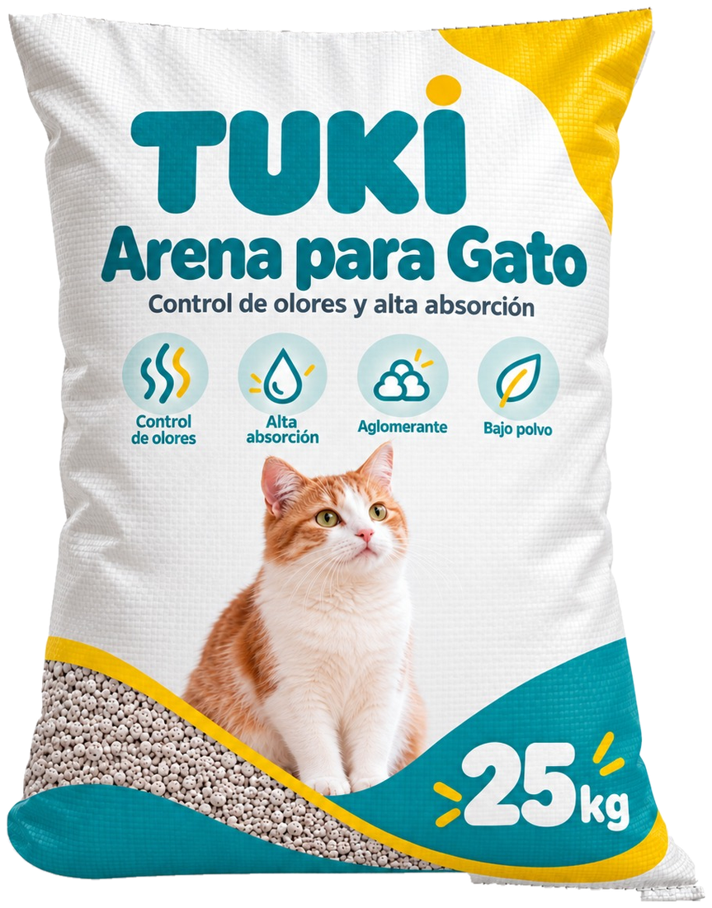
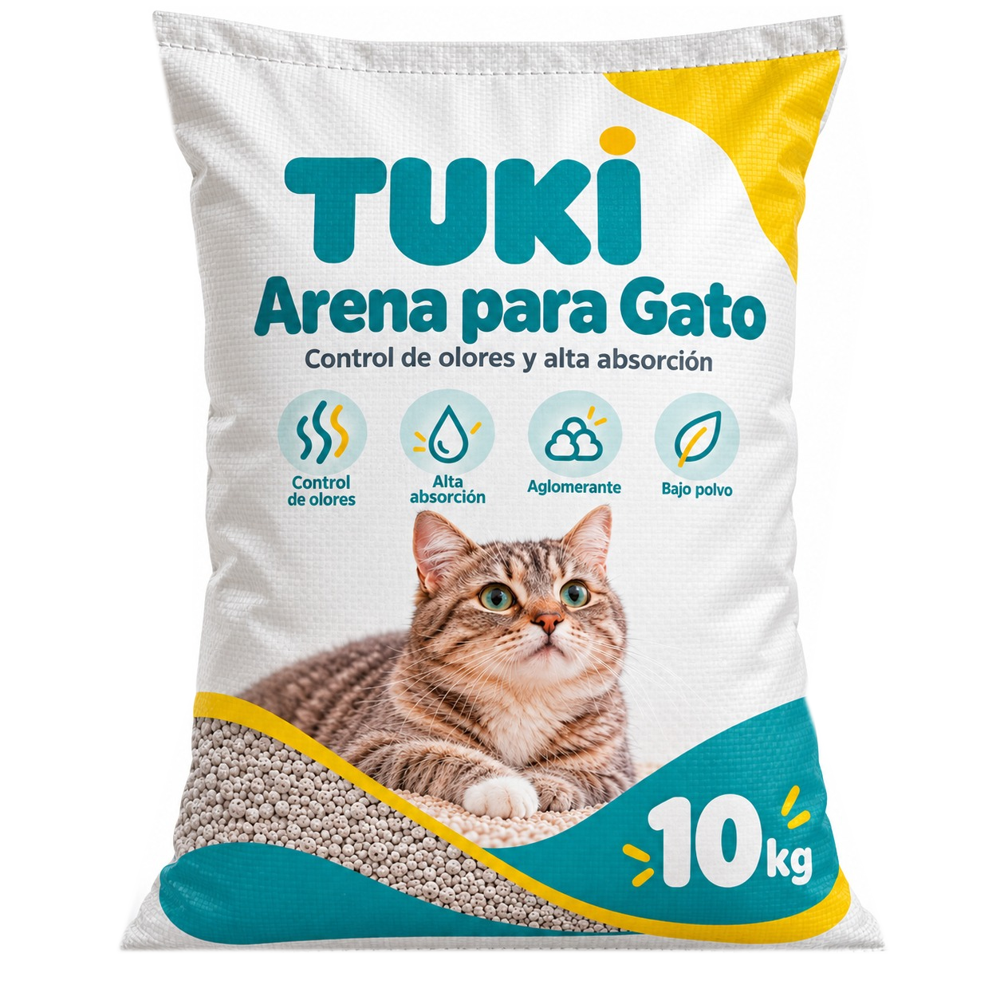
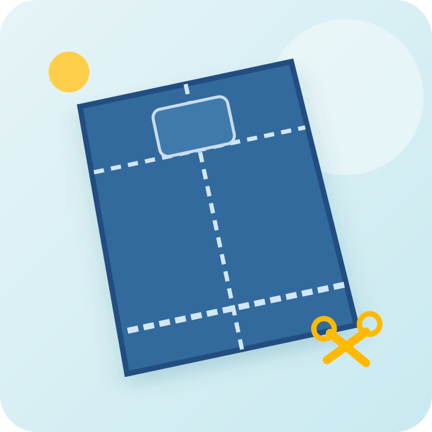
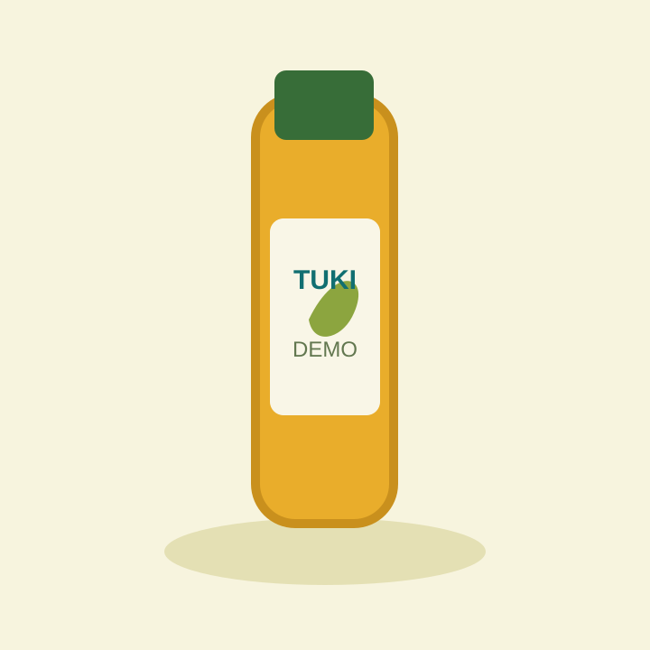
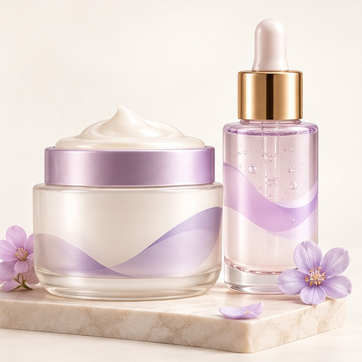

¡La sexta basta va por nuestra cuenta!
Sube 5 bastas en pantalones jean y la 6.ª es gratis.
Más que productos, momentos de bienestar. Encuentra lo mejor para tus mascotas, tus prendas y tu hogar.

Cuatro espacios para acompañarte en el día a día.
Arenas, shampoos, pipetas y mucho más.
Explorar ↗
🧺 TU ROPACuidado de prendas, costuras y arreglos.
Ver servicios ↗
🏠 TU HOGARUna nueva línea está tomando forma.
Descubrir ↗
✿ TU BIENESTARRituales de cuidado personal que florecen.
Muy pronto ↗
PRÓXIMAMENTEProductos y servicios para ti y quienes más quieres.
Prueba con otra búsqueda o explora todo nuestro catálogo.
Especial de fin de mes para nuestros servicios de costura.
Sube 5 bastas en pantalones jean y la 6.ª es gratis.
Cambia 5 cierres en jeans, shorts o faldas y el 6.º es gratis.
Sube 10 bastas a máquina en jean, drill o tela y recibe una funda de algodón de 45 × 60 cm.
Cambia 10 cierres en jean, drill o tela y recibe una funda de algodón de 50 × 70 cm.
Distintas formas de cuidar cada rincón de tu vida.
Acompañando a tu familia, a tus mascotas y a tu hogar con soluciones para cada día.
Descubre TUKI ↗NÉVORA, una marca conceptual de belleza enfocada en transformar el cuidado diario en un ritual especial.
✦ PRÓXIMAMENTE✿Estamos imaginando nuevas líneas de productos para hacer tus días más fáciles y especiales.
Creemos en las cosas que hacen más simple y bonita la rutina: el bienestar de tus mascotas, el cuidado de tus prendas y, próximamente, nuevos productos para tu hogar y tu piel.
Hablemos →Elige productos en el catálogo, selecciona la presentación, agrégalos al carrito y presiona «Enviar pedido por WhatsApp». Recibiremos el detalle para coordinar contigo.
No. Este es un proyecto de demostración y todos los precios mostrados son referenciales; los productos, presentaciones y tarifas reales deberán ser validados antes de vender.
La compra de una bolsa TUKI de arena de 25 kg añade una pala sanitaria gratis al resumen del pedido. La promoción está sujeta a disponibilidad y confirmación.
En el carrito puedes indicar entrega a domicilio o recojo. La dirección, los horarios, la sede, el costo de envío y la disponibilidad se coordinan directamente por WhatsApp.
No. NÉVORA y los productos de cocina aparecen como conceptos de muestra con la indicación «Próximamente» y no pueden comprarse todavía.